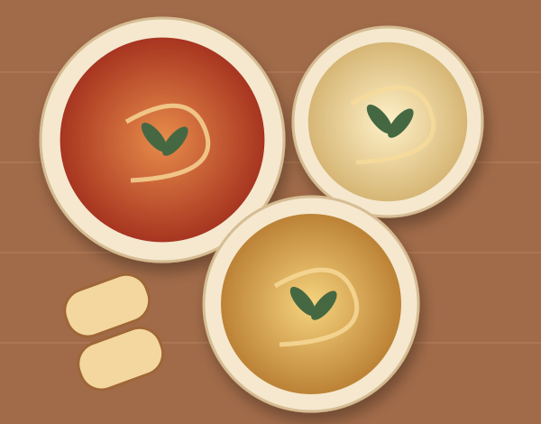

VALPARAISO'S DAILY SOUP DESTINATIONOne City.
One City.
One Site.
All the Soups.
What's simmering in Valpo today?
Your favorite local restaurants. Today's soups. All in one place.
Explore today's soups ↓ All restaurants →
EAT
LOCAL ♥
LOCAL ♥
THE DAILY BOWL
Today’s soup lineup.
Find your next bowl, all in one place.
Sample menu preview — offerings are illustrative and not confirmed for today.
THE CRAVING GUIDE
Find your flavor.
What's simmering?
Soups of the day ↗02 / LOCAL DEALSDelicious deals.
Weekly specials ↗03 / GOOD TIMESSip & socialize.
Happy hours ↗THE LOCAL DIRECTORY
All local restaurants.
Discover Valparaiso by cuisine. Every basic listing is free.
Restaurant details may change. Please confirm hours, menus and contact information directly with the restaurant.